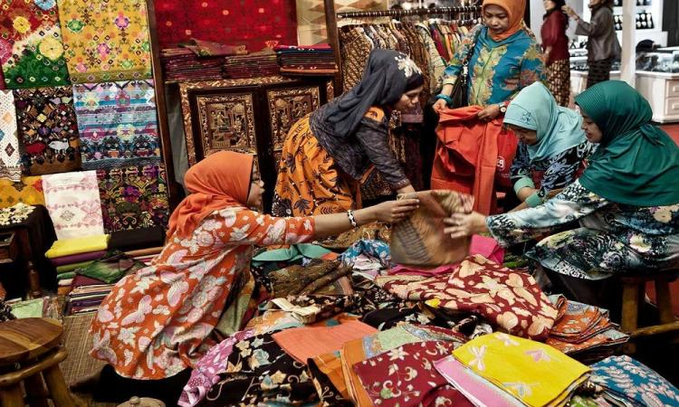
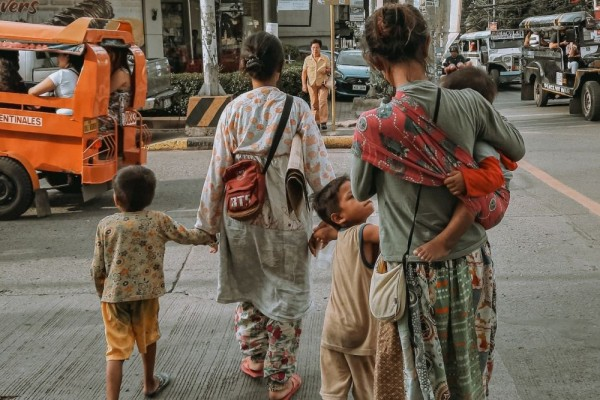

Dampak bagi Indonesia
Setelah melihat keseluruhan peran Indonesia dalam berkontribusi memenuhi tujuan nomor 8 SDGs, yaitu ‘Pekerjaan Layak dan Pertumbuhan Ekonomi’. Tentunya dari berbagai kerjasama yang dilakukan memberi dampak positif bagi perkembangan ekonomi dan memberi pekerjaan layak untuk warga. Program-program yang mendukung keberadaan UMKM, serta pelatihan teknis dan kemampuan vokasional untuk mengurangi tingkat pengangguran, juga mengurangi tingkat kemiskinan di Indonesia dengan luasnya lapangan pekerjaan baru. Dengan pekerjaan yang baru dan layak, rakyat Indonesia dapat memenuhi kebutuhan sehari-harinya dengan pendapatan yang dihasilkan. Harapannya kondisi dimana kesenjangan pendapatan dapat mendorong pemerintah melakukan upaya untuk setidaknya mengatasi hal tersebut supaya rakyat dapat memenuhi kebutuhan primernya.
Namun, hal yang perlu diawasi adalah kesenjangan ekonomi yang sangat dapat terjadi, awalnya ingin meningkatkan pertumbuhan ekonomi, tetapi setelah itu pembagiannya tidak merata sampai pelosok sehingga kelompok masyarakat tertentu saja yang dapat menikmatinya. Walaupun terdapat upaya dari pemerintah maupun perusahaan untuk mematuhi terkait peraturan upah minimum, masih terdapat banyak tantangan yang menghambat setiap pekerja mendapat upah yang layak. Selain itu dalam beberapa kasus, langkah-langkah yang diambil untuk meningkatkan efisiensi dan jumlah produksi, terutama bagi para pekerja buruh dapat menimbulkan beban kerja berlebihan menuju penurunan kualitas hidup masyarakat.

